Instagram 180 条帖 · TikTok 134 条视频 · YouTube 113 条视频，全部 Apify 官方 Actor 实抓 + Playwright 真实浏览器截图。
账号验证方式：全部 9 个品牌的社媒 handle 均从各自官网页脚 HTML 中提取（非搜索结果推测），再用 Apify 拉到真实主页数据二次确认（粉丝数 / 认证状态 / 官网外链）。
| 品牌 | TikTok | YouTube | 页脚来源 | |
|---|---|---|---|---|
| AroundFire | @aroundfire_official ✅ | @aroundfireoffical ✅（官方 handle 少一个 i，是笔误但已在用） | @AroundFire ✅ | aroundfire.co |
| Solo Stove | @solostove ✅ | @solostove ✅ | @solostove ✅ | solostove.com（403，用 scrapling 破） |
| Breeo | @breeo ✅ | ❌ 无官方 TikTok（@breeo 抓取返回 "Profile is private"） | @breeofirepits ✅ | breeo.co |
| BioLite | @biolite ✅ | @biolite ✅ | BioLiteChannel ✅ | bioliteenergy.com |
| Nomad Grills | @nomadgrills ✅ | @nomadgrills ✅ | NOMADGrillsVideo ✅ | nomadgrills.com |
| Gather Grills | @gathergrills ✅ | @gathergrills ✅ | @gathergrills5433 ✅ | gathergrills.com |
| Snow Peak | @snowpeakusa ✅ | @snowpeakusa ✅ | ⚠️ 官网页脚未挂 YouTube；youtube.com/@snowpeakusa 实抓证实是一个 66 粉、1 条 2010 年视频的同名个人号（Jet111111），不是官方号 | snowpeak.com |
| KBBQ Bros | @kbbqbros ✅ | @kbbqbros ✅ | @KBBQBROS ✅ | kbbqbros.com |
| Overland Expo | @overlandexpo ✅ | @overlandexpo（已停更，末条 2022-06） | @OverlandExpo ✅ | overlandexpo.com |
@snowpeakusa 是同名个人号，不能当官方号用| 账号 | 粉丝 | 累计发帖 | 认证 | 采样发帖频率 | 平均赞 | 中位赞 | 平均评论 | ER(赞/粉) |
|---|---|---|---|---|---|---|---|---|
| @aroundfire_official | 1,656 | 113 | ❌ | 0.29/周 | 579※ | 26 | 29.4 | — ※ |
| @solostove | 456,328 | 2,998 | ✅ | 0.35/周 | 526 | 106 | 149.5 | 0.12% |
| @nomadgrills | 350,400 | 1,582 | ✅ | 0.51/周 | 379 | 264 | 21.4 | 0.11% |
| @overlandexpo | 228,340 | 4,209 | ❌ | 6.36/周 | 174 | 132 | 13.7 | 0.08% |
| @breeo | 211,950 | 2,399 | ✅ | 1.69/周 | 492 | 99 | 12.8 | 0.23% |
| @snowpeakusa | 179,434 | 4,418 | ✅ | 6.36/周 | 1,075 | 204 | 12.9 | 0.60% |
| @biolite | 130,191 | 2,289 | ✅ | 0.19/周 | 86 | 53 | 23.1 | 0.07% |
| @kbbqbros | 32,841 | 148 | ✅ | 0.25/周 | 5,572※ | 134 | 28.9 | — ※ |
| @gathergrills | 16,992 | 442 | ❌ | 0.20/周 | 8,054※ | 60 | 66.5 | — ※ |
| 账号 | 粉丝 | 累计视频 | 累计获赞 | 采样频率 | 平均播放 | 中位播放 | 平均赞 |
|---|---|---|---|---|---|---|---|
| @solostove | 697,600 | 549 | 3.1M | 0.83/周 | 965 | 922 | 17 |
| @nomadgrills | 8,636 | 207 | 45.4K | 0.07/周 | 113,195※ | 1,936 | 2,098 |
| @snowpeakusa | 3,422 | 128 | 6,162 | 0.68/周 | 447 | 432 | 9 |
| @overlandexpo | 1,861 | 7 | 485 | 已停更（末条 2022-06-03） | 2,237 | 2,284 | 59 |
| @kbbqbros | 1,183 | 60 | 7,172 | 0.72/周 | 579 | 566 | 23 |
| @biolite | 875 | 177 | 5,584 | 0.38/周 | 513 | 296 | 4 |
| @gathergrills | 821 | 43 | 2,386 | 1.33/周 | 1,989 | 929 | 78 |
| @aroundfireoffical | 54 | 57 | 797 | 0.87/周 | 453 | 374 | 13 |
| Breeo | — | — | — | 无官方 TikTok | — | — | — |
※ Nomad 的平均播放被 2021 年那条 200 万播放的老爆款拉爆，近两年常态是 1,000–5,000。
| 频道 | 订阅 | 总视频 | 总播放 | 采样频率 | 平均播放 | 中位播放 |
|---|---|---|---|---|---|---|
| Breeo | 135,000 | 443 | 79.9M | 0.72/月 | 28,453 | 4,391 |
| Solo Stove | 28,300 | 334 | 36.7M | 2.32/月 | 4,228 | 2,063 |
| Overland Expo | 18,900 | 293 | 2.9M | 1.42/月 | 13,601 | 4,050 |
| BioLite | 14,900 | 195 | 6.4M | 0.52/月 | 4,352 | 3,625 |
| NOMAD Grills | 5,560 | 296 | 2.1M | 0.48/月 | 752 | 374 |
| Gather Grills | 293 | 34 | 44K | 0.55/月 | 501 | 355 |
| KBBQBROS | 98 | 25 | 60K | 0.19/月 | 4,002 | 4,784 |
| AroundFire | 87 | 56 | 71,461 | 0.33/月 | 1,127 | 181 |
| Snow Peak | — | — | — | 无官方频道 | — | — |
| 账号 | 产品展示 | 场景生活方式 | 食谱/教程 | UGC/达人合作 | 促销/抽奖 | 幕后/品牌故事 | 活动/社群 | 节日节点 |
|---|---|---|---|---|---|---|---|---|
| AroundFire | 3 | 4 | 0 | 12 | 1 | 0 | 0 | 0 |
| Solo Stove | 3 | 6 | 2 | 3 | 4 | 0 | 2 | 2 |
| Breeo | 3 | 1 | 0 | 6 | 4 | 3 | 2 | 3 |
| BioLite | 11 | 4 | 1 | 2 | 2 | 0 | 0 | 0 |
| Nomad Grills | 3 | 3 | 5 | 4 | 1 | 2 | 1 | 1 |
| Gather Grills | 6 | 4 | 1 | 4 | 2 | 0 | 3 | 3 |
| Snow Peak | 9 | 5 | 1 | 1 | 2 | 1 | 3 | 0 |
| KBBQ Bros | 2 | 9 | 2 | 5 | 1 | 1 | 0 | 0 |
| Overland Expo | 3 | 2 | 0 | 1 | 3 | 1 | 10 | 1 |
内容类型（近 20 帖）：达人/UGC 转发 12｜场景生活方式 4｜产品展示 3｜促销抽奖 1｜食谱 0｜幕后 0
视觉风格：全部实拍生活场景，无一张白底产品图。夜景火光 + 桌面美食俯拍 + 家庭/情侣出镜是主结构，人物出镜比例约 14/20（70%），是全场最高之一。画面质感参差——因为大部分素材是达人自己拍的，好的（@betweenus.aa 那条湖边慢生活）非常好，差的（自制"NEW FAVORITE OUTDOOR"黄字贴纸那条）明显是转化向剪辑，两种调性混在同一个网格里。
文案风格：情绪叙事为主（"We don't have a favorite place. We have our favorite people"、"A slow life by the fire"），少量功能说明。几乎每条达人帖都带折扣码（JOYFOODLV / betweenus / 12% off），说明目前 IG 主要当联盟带货渠道在用，不是品牌资产在做。
| 排名 | 类型 | 播放 | 内容 |
|---|---|---|---|
| 1 | 达人 UGC＋折扣码 | 216,289 | @betweenus.aa "A slow life by the fire 🔥 Our favorite table" — 情侣、夜色、无口播、纯氛围 |
| 2 | 达人 UGC 产品体验 | 45,487 | Grande Table 露营，"great for a bigger groups" |
| 3 | 达人 UGC 情绪叙事 | 31,829 | "We don't have a favorite place. We have our favorite people" |
| 4 | 用户证言/痛点叙事 | 7,645 | 带娃露营"总有一个人在旁边单独做饭" |
| 5 | 产品功能说明 | 5,426 | 专利设计 / 30 秒搭建 |
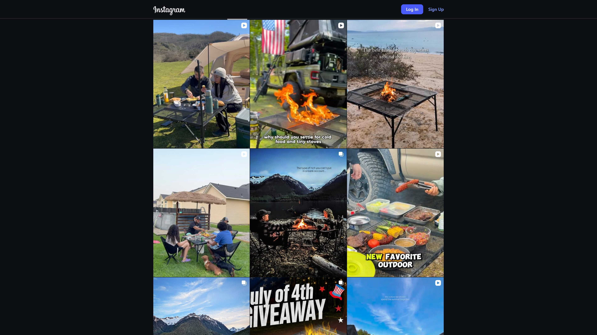
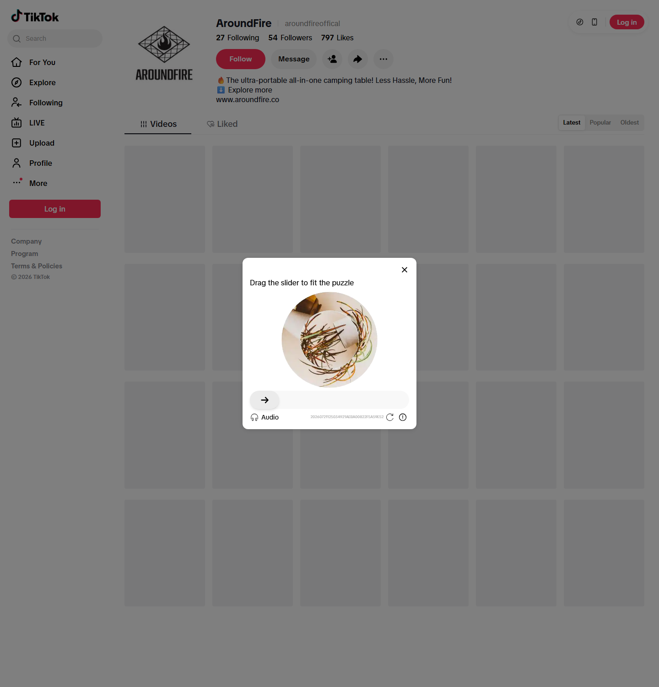
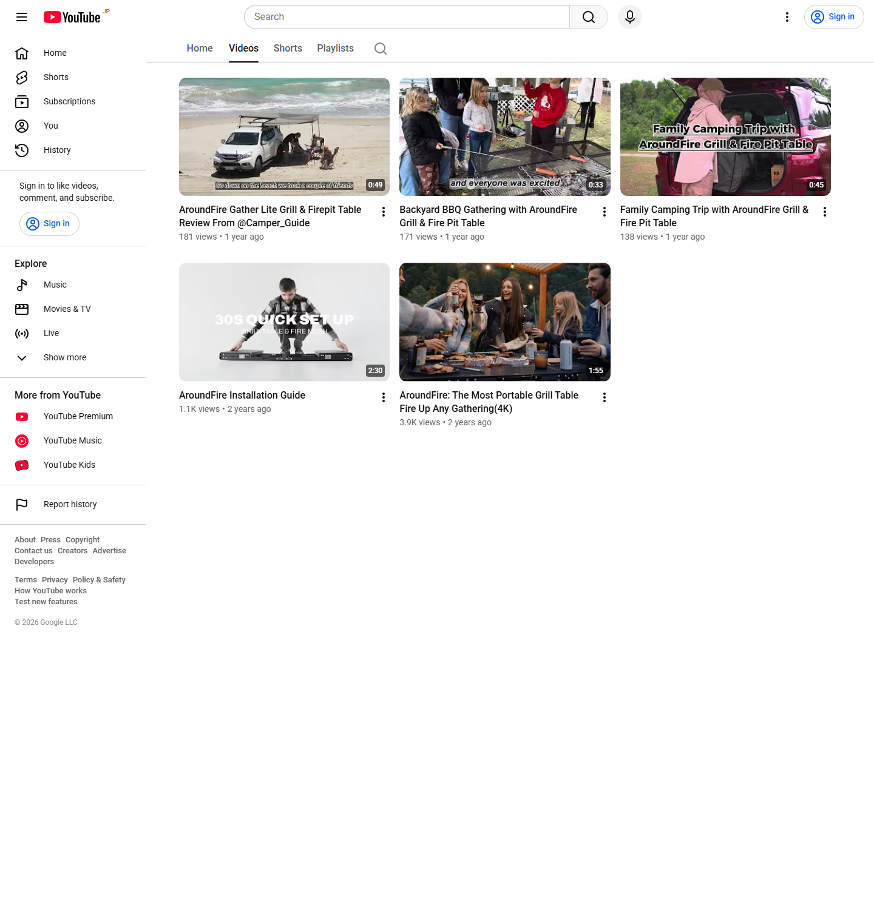
视觉风格：高制作水准的实拍生活场景，每条 Reels 结尾都标注摄影师（🎥: @haleyburrell），说明是长期签约创作者池在供片而非一次性投放。注意 Solo Stove 的"围坐"是围着火盆坐着聊天（椅子朝火），不是围着桌子吃饭（人朝彼此）——这个细微差别正是它和 Gather / KBBQ / AroundFire 的分野。
文案风格：极短的情绪/俏皮句（"Drop it like it's hot 🍕"、"Built for the ones who aren't ready to call it a night"）。平均 8–15 个词，几乎不解释产品。
| 排名 | 类型 | 赞 / 评 | 内容 |
|---|---|---|---|
| 1 | 达人 UGC＋跨品牌联名 | 5,499 赞 | "This is how I Grill Girl Summer" ×@cheekiesswim |
| 2 | 新品发布 | 1,407 赞 / 77K 播放 | Solo Steelfire 30 Griddle 上市 |
| 3 | 抽奖（国庆 250 周年） | 842 赞 / 310 评 | 限量 1-of-1 火盆抽奖 |
| 4 | 抽奖（Tag 好友） | 483 赞 / 953 评 | 独立日烟花躺椅抽奖 |
| 5 | 三方联名抽奖 | 462 赞 / 1,255 评 | ×@orukayak ×@chubbies "Summer with Solo Brands" |
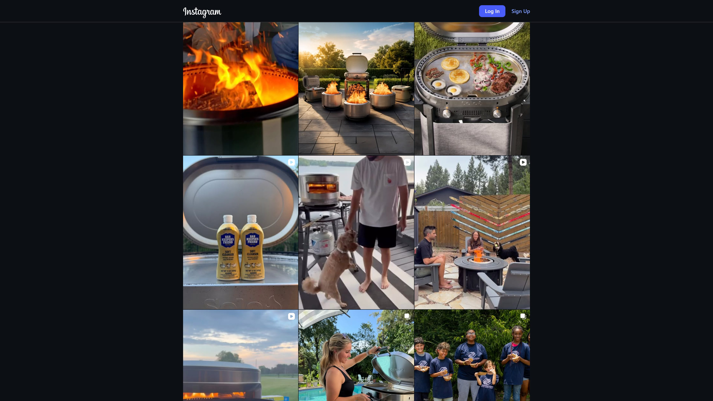
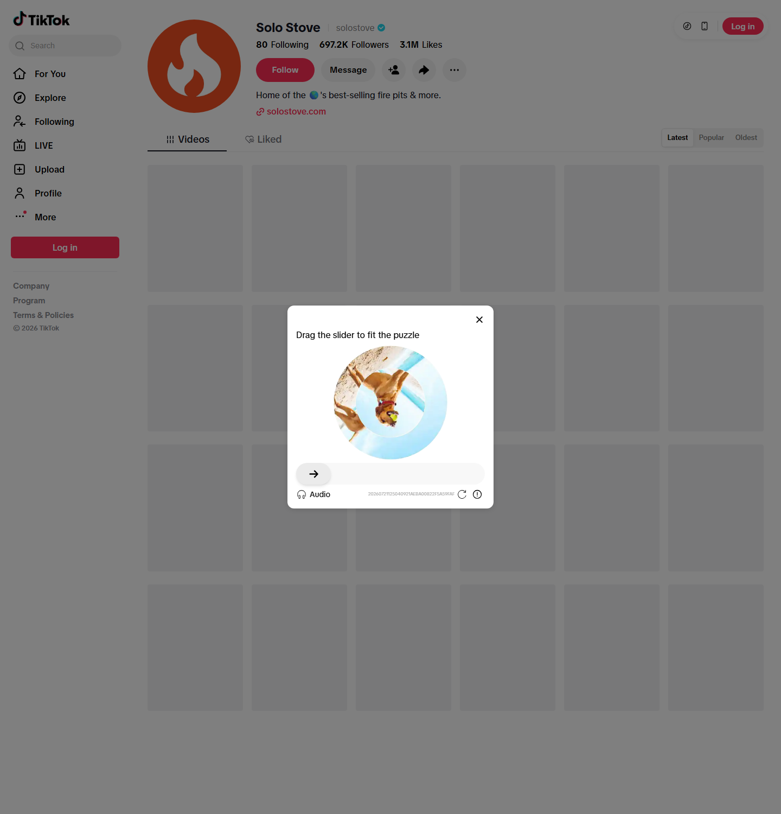
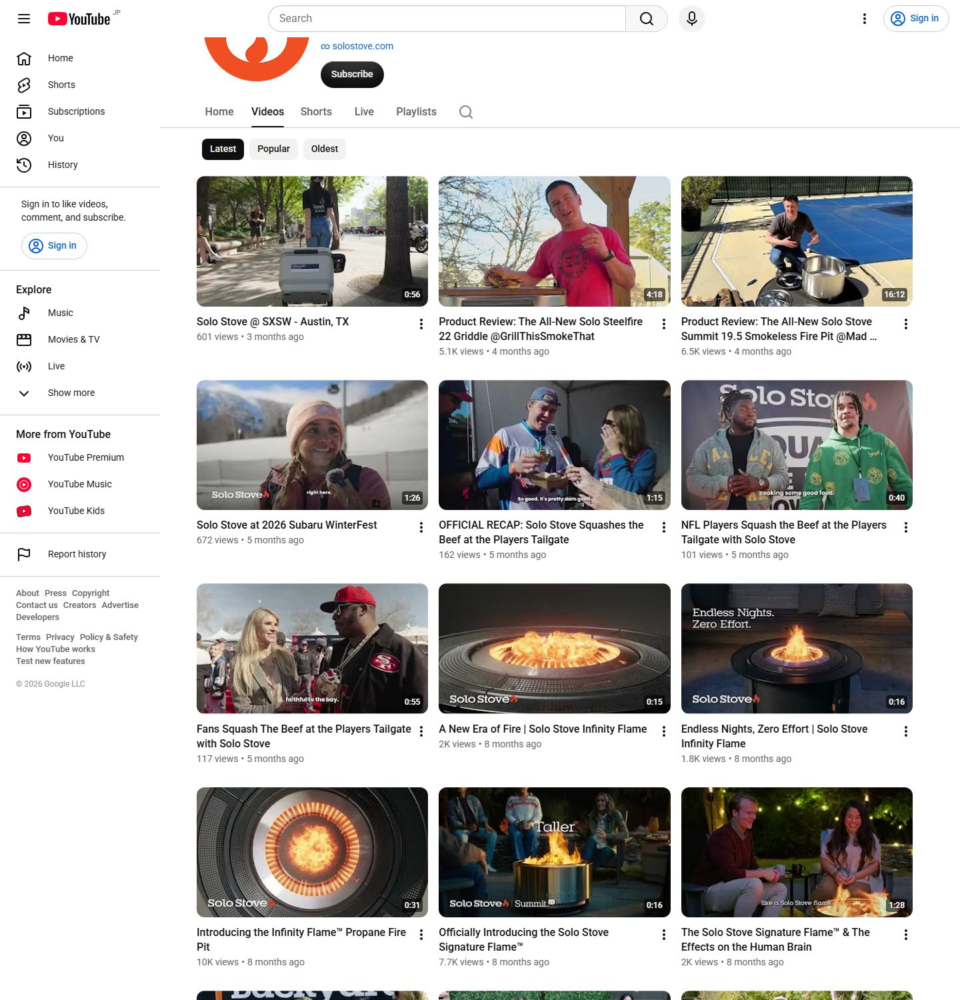
视觉风格：夜景火光 + 大块肉 + 美式蓝领质感。有意识地做幕后/人味内容（"How we spend our lunch break at Breeo"），这在本品类里很少见。文案风格：品牌口号化标签 #YourFireStartsHere 高频复用；促销直给。
| 排名 | 类型 | 赞 / 播放 | 内容 |
|---|---|---|---|
| 1 | 达人合作（硬核大制作） | 3,160 赞 | ×@thebeardedbutchers "EPIC WHOLE COW COOK"（整头牛） |
| 2 | 达人证言（口播） | 2,413 赞 / 151K 播放 | "总有人问我是不是真的在家用明火做饭…其实我天天用" |
| 3 | 促销 | 1,624 赞 / 551,918 播放 | Memorial Day 15% off |
| 4 | 达人 UGC 聚餐 | 651 赞 | 牛排＋松饼的周六早餐局 |
| 5 | 达人 UGC 聚餐 | 469 赞 | "Having the crew around my @breeo" |
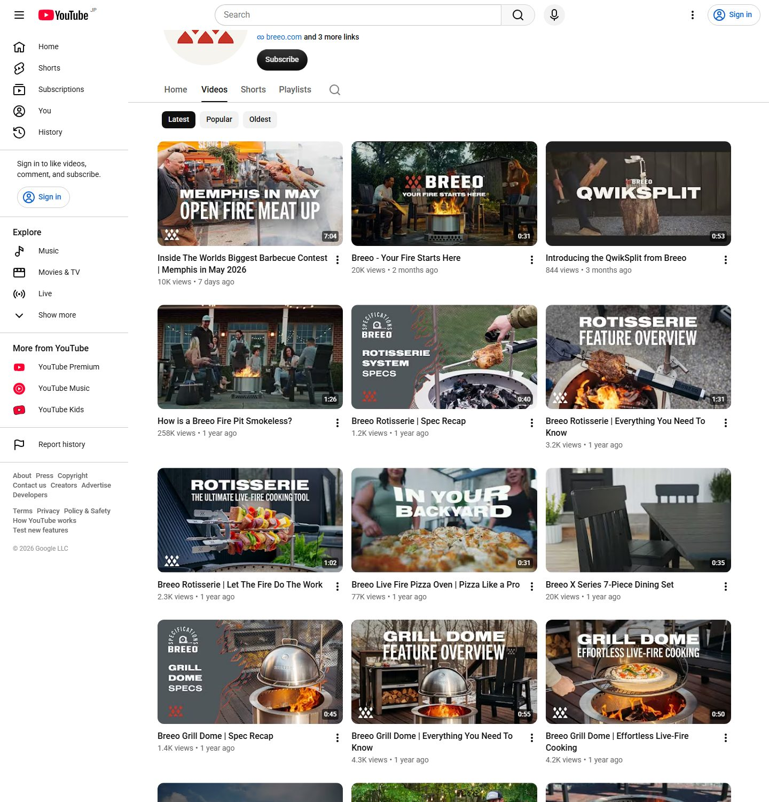
Spec Recap（40s）→ Everything You Need To Know（1:31）→ Effortless Live-Fire Cooking（50s）；③ 视频普遍很短，15 条里 11 条在 1 分半以内；④ 唯一的 25.8 万播放来自《How is a Breeo Fire Pit Smokeless?》——一条 1:26 的原理科普，播放量是第二名的 3.3 倍内容类型：产品展示 11｜场景 4｜UGC 2｜促销 2｜食谱 1。视觉风格：干净的产品图、参数图、单品静物，人物出镜比例最低。文案风格：纯功能说明（"8 minutes of charge = 1 hour of full-brightness light"），几乎没有情绪。
结果：13 万粉，近 20 帖平均 86 赞、中位 53 赞，ER 0.07%，全场最低。TikTok 875 粉、平均 4 个赞。互动最高的 3 条：品牌合并公告（358 赞）＞ CampStove 产品说明（300 赞）＞ 跨品牌抽奖（197 赞 / 365 评）——它唯一评论量上 3 位数的还是抽奖。
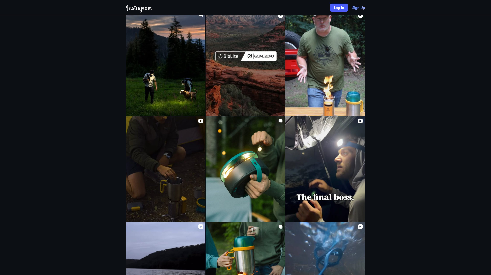
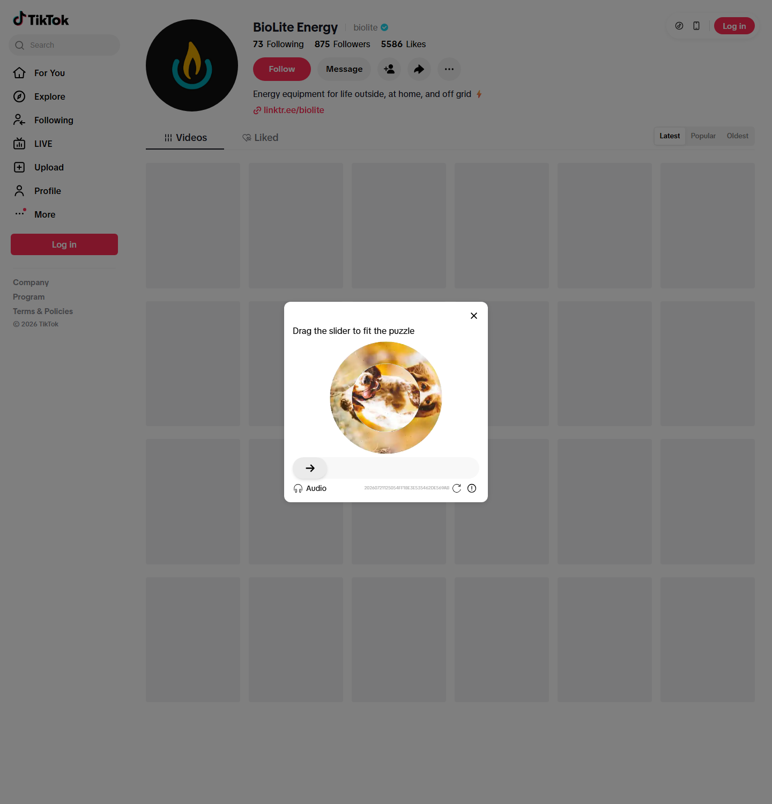
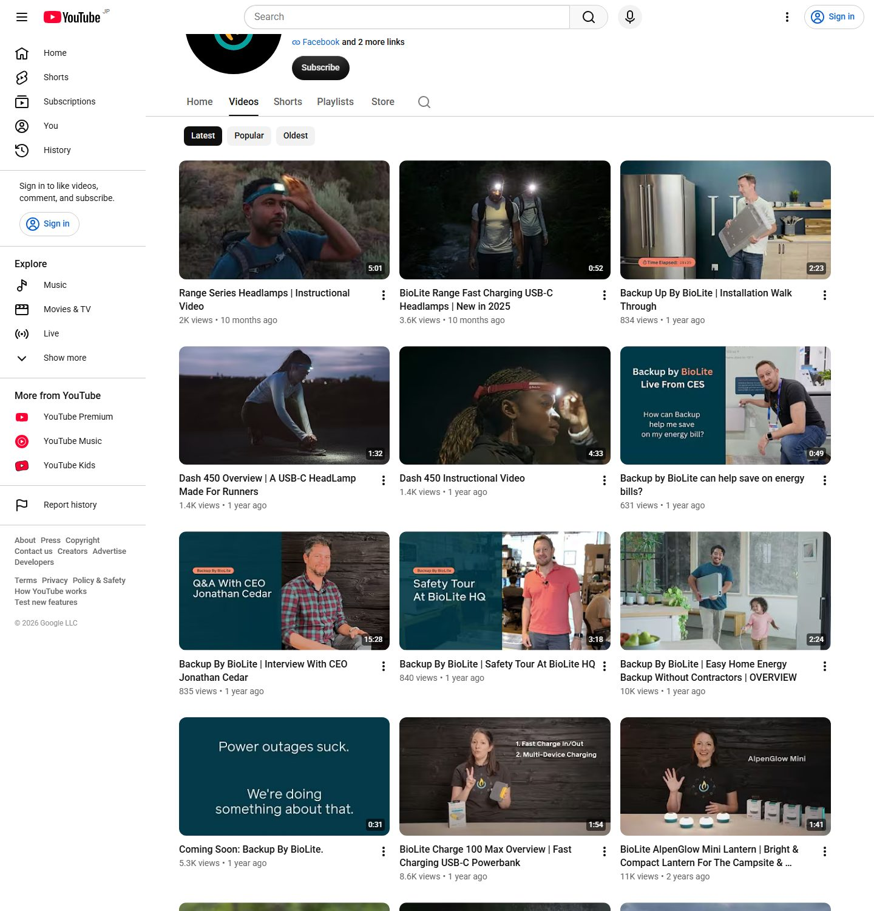
BioLite 的品类归属其实偏"户外能源"而非"围火聚餐"，但它证明了一件事：在这个人群里，讲参数不涨互动。
视觉风格：食物特写占主导，产品经常只是画面里的一个底座。人物出镜多为专业厨师/BBQ 达人，不是普通家庭。文案风格：非常有辨识度的押韵俏皮体——"Roll me up and smoke me when ribeye… 💨"、"Ringing in the New Sear with a little help from our grillfriends"。这是全场文案个性最强的账号。
| 排名 | 类型 | 赞 / 评 | 内容 |
|---|---|---|---|
| 1 | 新品发布 | 1,676 赞 / 158 评 | 全新 RODEO Grill & Smoker，Made in USA，预售 |
| 2 | 跨品牌联名合影 | 794 赞 | "Ringing in the New Sear with our grillfriends" ×6 个品牌 |
| 3 | 食物特写 | 648 赞 | Ribeye 卷肉 |
| 4 | 人物故事长文 | 441 赞 | 苗族主厨 @YiaVang70：难民营出生、James Beard 得主 |
| 5 | 人物故事长文 | 402 赞 | @Jerms1977：海军陆战队老兵、飞钓、南极摄影师 |
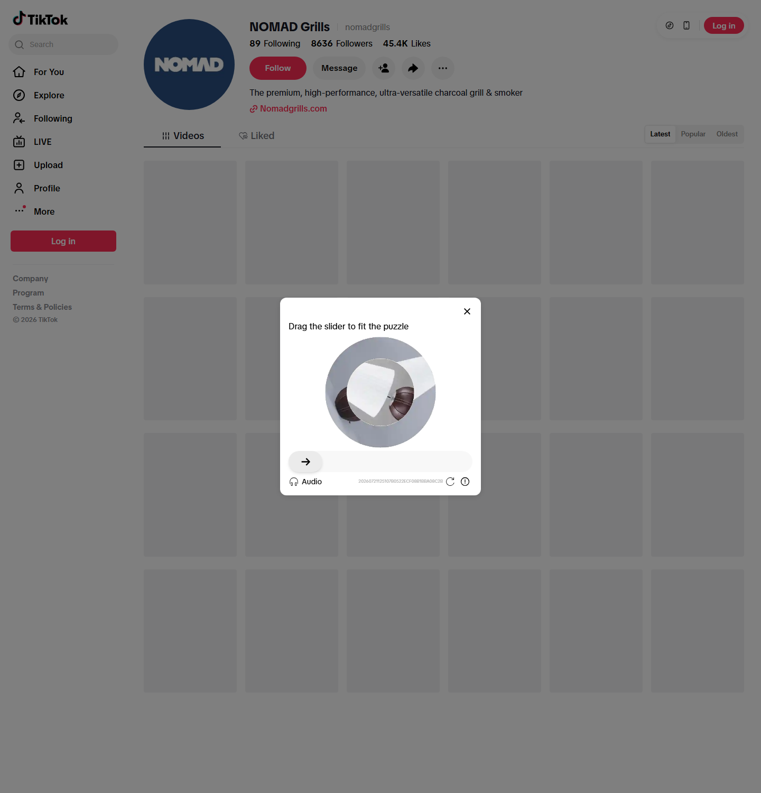
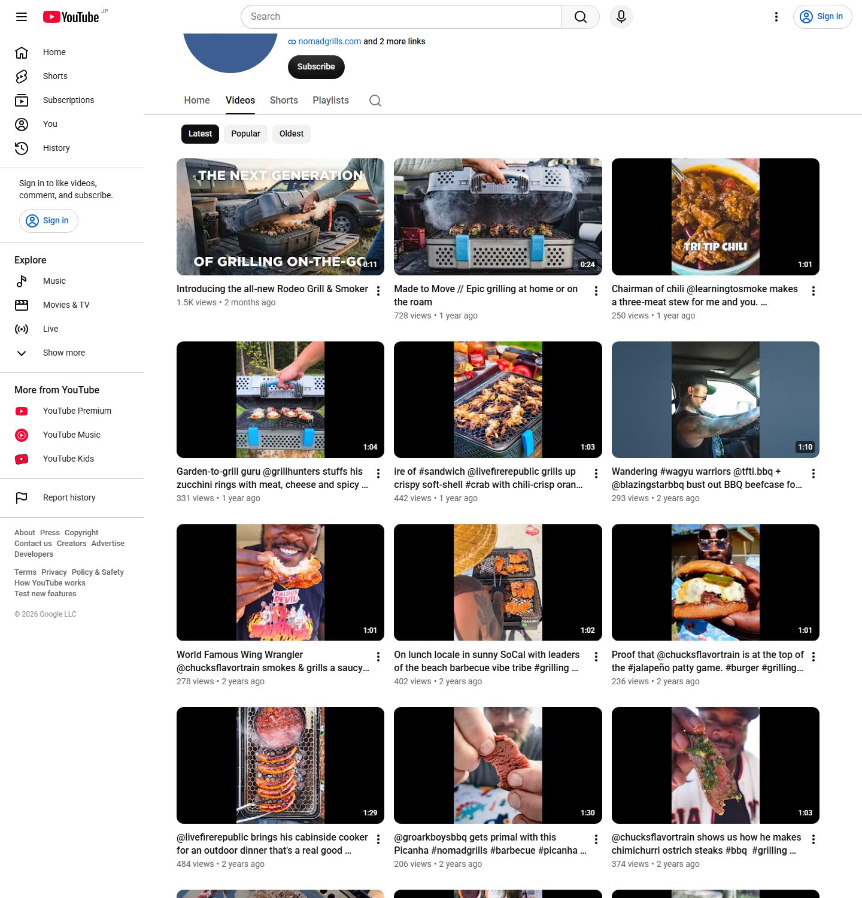
Nomad 是唯一把"人物志"当固定栏目在做的品牌——用产品去认识一个有故事的人，而不是让人去展示产品。第 4、5 名两条都是这个套路，且都是长文案。
视觉风格：围坐俯拍是它的招牌镜头——圆形烤盘中间是火、一圈人围坐、每人面前一个盘子。这是全场唯一把"多人围坐"当作固定视觉母题在重复输出的品牌。制作粗糙（手机直拍、无调色），但场景真实。文案风格：直白的社群号召——"Let's gather and grill"、"Change the way you gather"、"gather often and gather well"。品牌名本身就是行动指令。
| 排名 | 类型 | 赞 / 播放 | 内容 |
|---|---|---|---|
| 1 | 达人合作＋折扣码 | 132,175 赞 / 2,872,298 播放 | "Fire up the flavor 🔥 把简单食材变成难忘时刻"（×@cookitwithtim） |
| 2 | 新年情绪叙事 | 26,506 赞 / 1,271,562 播放 | "把'常聚、好好聚'列进新年计划" |
| 3 | 主厨教程 | 853 赞 | ×@davidbancroft 半壳红鱼做法 |
| 4 | 场景（早餐局） | 351 赞 | "周二早晨因为好食物和好朋友而不同" |
| 5 | UGC 转发 | 236 赞 | 粉丝海边烤虾 |
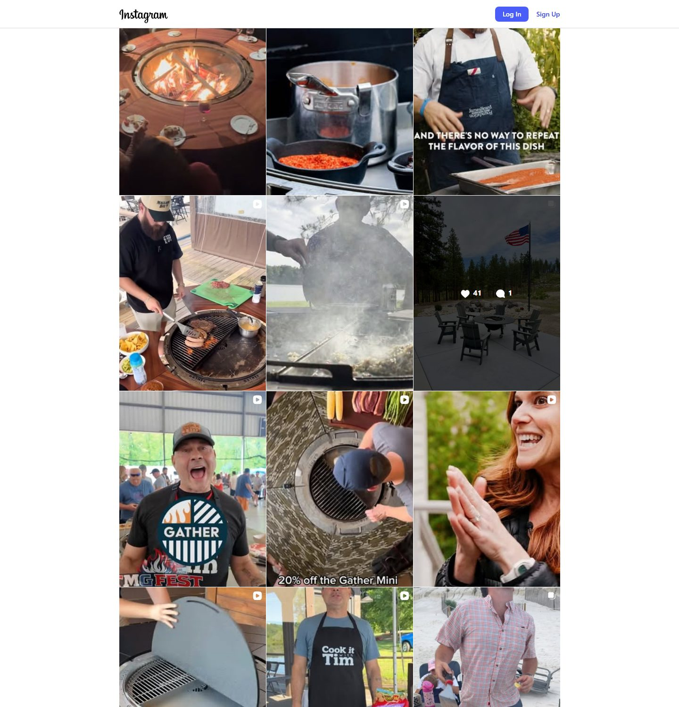
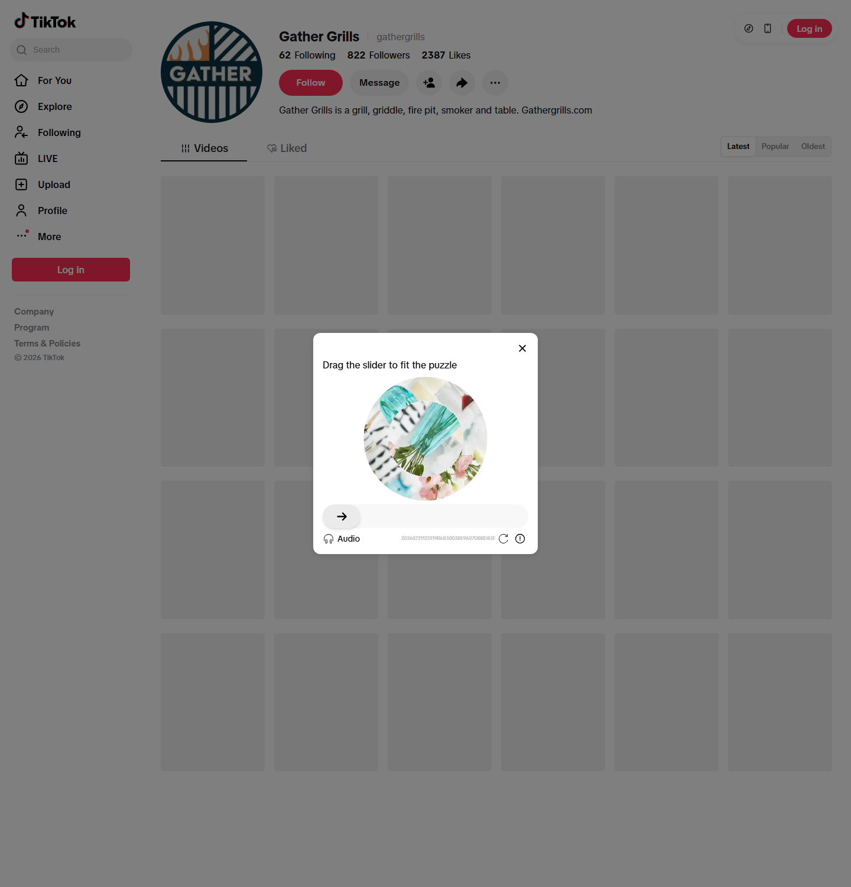
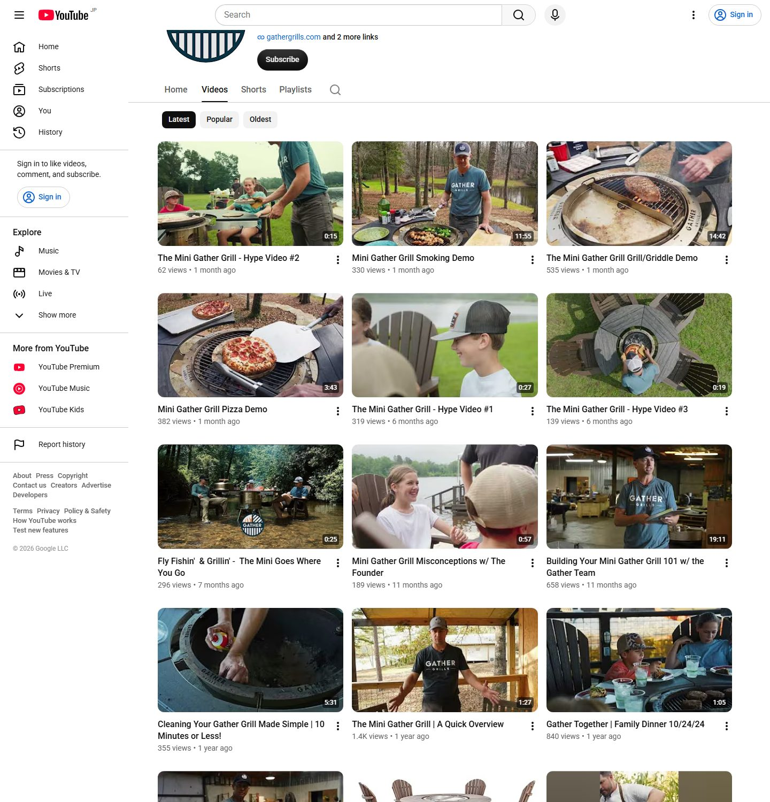
视觉风格：全场调性最统一、最高级的账号——杂志静物 + 自然光 + 冷白/米色调，carousel 占 12/20（多图轮播是它的主形式，不是 Reels）。文案风格：克制的日式生活哲学（#noasobi 野游、"Ground yourself in the moment"），几乎不促销。发帖频率 6.36 条/周，是全场最高之一，靠高频＋高统一度堆品牌资产。
关键数据：ER 0.60%，是全场最高（1,075 平均赞 / 17.9 万粉）——证明"高频＋美学统一"这条路在这个人群里同样成立，只是它卖的是露营美学不是烤肉。
| 排名 | 类型 | 赞 / 评 | 内容 |
|---|---|---|---|
| 1 | 达人探店/体验 | 16,973 赞 / 159 评 | @snowpeakcampfield 日式露营地体验 |
| 2 | 新零售店开业 | 633 赞 | Snow Peak Seattle 开在 evo 园区 |
| 3 | 产品系统讲解 | 388 赞 | "IGT-maxxing all summer long"：从 2 人到 10 人的模块化桌 |
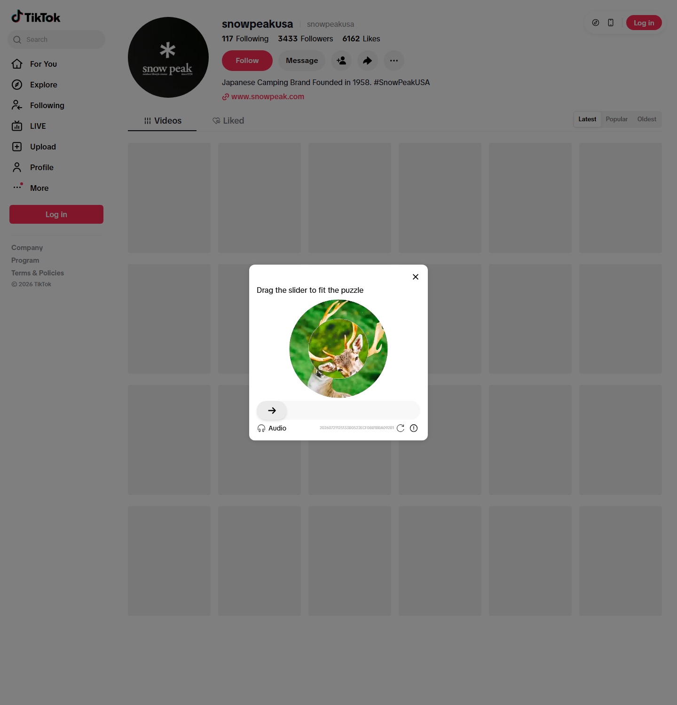
第 3 名值得注意——"从两人用到十人聚"的模块化叙事（"A setup for two to a gathering space for ten"）拿到了 388 赞，这是 Snow Peak 里少见的把"人数扩展"直接写进文案的一条，和 AroundFire 的 Grande Table 是同一个卖点。
形式：20/20 全是 Reels 竖屏视频，没有一张静态图。视觉风格：后院夜景、暖黄灯串、烟火气、家人和小孩入镜，人物出镜比例最高（近 100%）。刻意不做精致——车库里两张烤桌、孩子在旁边跑，就是内容本身。
主页网格里最抢眼的一点：大字幕封面。它给几乎每条 Reels 都压了一句全大写/手写体的钩子文案当封面——My wife Left…. So i did This 🤣、MY WIFE MADE ME DO THIS、Dinner plans made in 30 sec、POV: I host a dinner party at home BEFORE getting this VIRAL KBBQ TABLE。这些钩子全是"家庭关系梗"和"省钱/省事梗"，没有一句是产品参数。
| 排名 | 类型 | 赞 / 播放 | 内容 |
|---|---|---|---|
| 1 | 情绪梗（家庭） | 69,507 赞 / 394,163 播放 | "he really said 'we have it at home'"（韩国老爸梗） |
| 2 | 达人 UGC | 30,098 赞 / 390,923 播放 | @jjamee.kim approved ✔️＋"6 人桌已售罄" |
| 3 | 达人 UGC 夏日场景 | 4,804 赞 / 191,566 播放 | "整个夏天都在后院做 ssambap" |
| 4 | 产品说服（清单式） | 4,038 赞 | "✅炭火燃气双用 ✅全球唯一 ✅次日发货" |
| 5 | 情感慢句 | 932 赞 | "The days are long. The years are short. 🤍" |
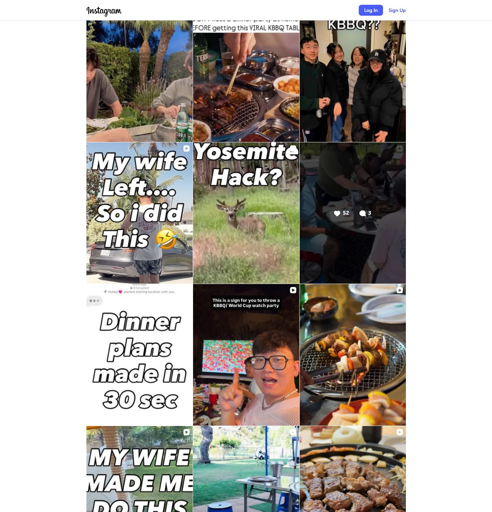
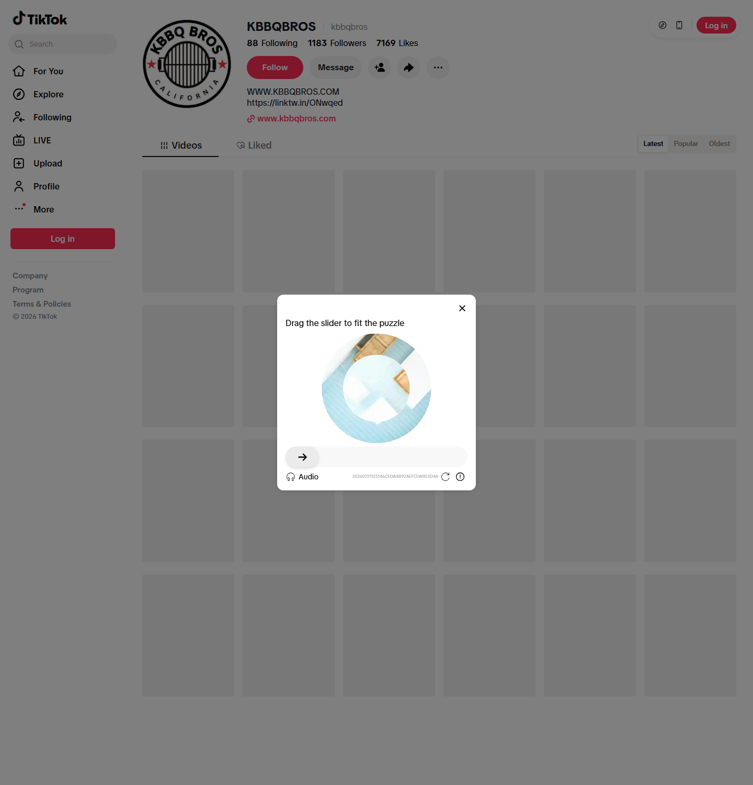
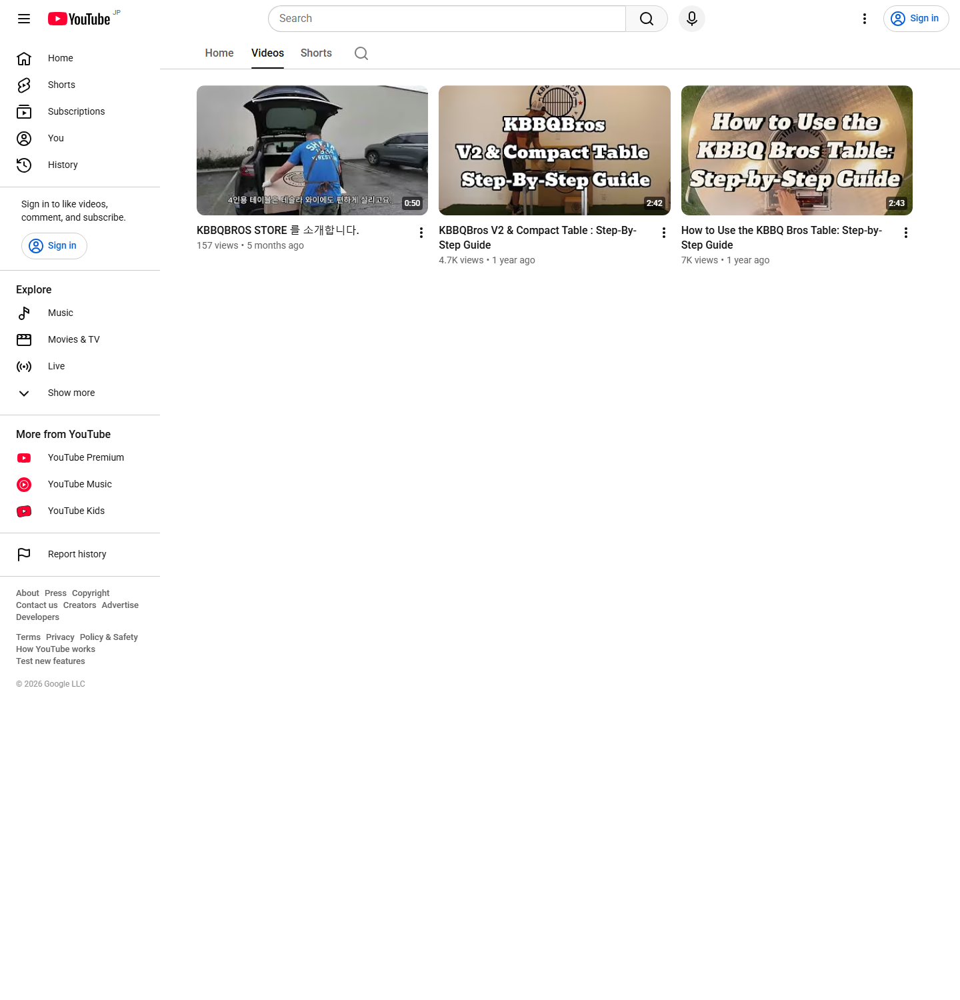
视觉风格：改装车/房车/营地实拍，carousel 为主（11/20）。人和车同框，"你的装备"是主角，不是"我们的产品"。主页网格里最值得抄的一点：它把互动指令直接做成封面大字——HELP US CAPTION THESE MOUNTAIN WEST PHOTOS!、NAME YOUR RIG USING EMOJIS ONLY. WE'LL GUESS! 👀👇。互动 CTA 不是藏在文案末尾，而是封面第一屏就喊出来。
发帖频率 6.36 条/周，围绕 5 场线下活动做全年内容日历：预热 → 现场直播感 → 收官感谢 → 明年招募。
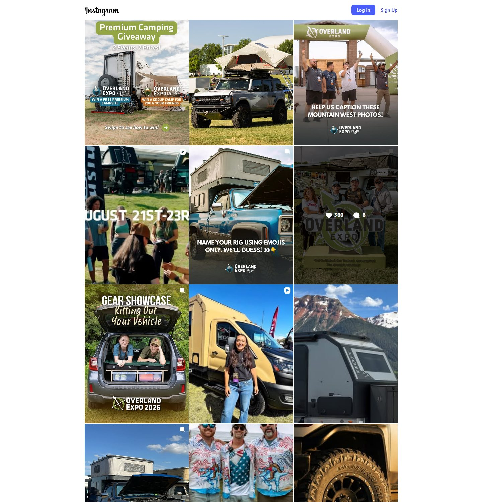
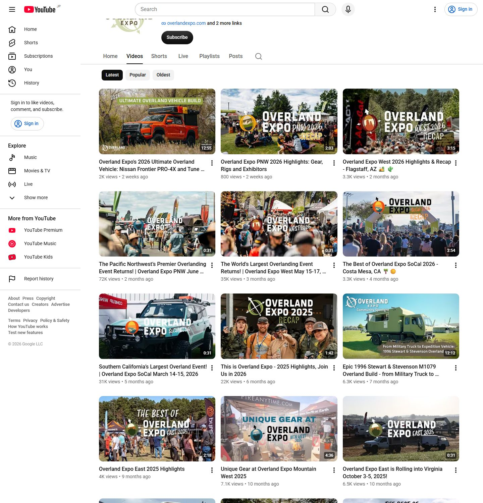
| 平台 | 这个品类实际在干什么 | 数据支撑 |
|---|---|---|
| 主战场。氛围/情绪/达人 UGC，Reels 为主（9 个账号里 6 个 Reels 占比 ≥55%） | 所有品牌的爆款都在 IG | |
| TikTok | 全品类集体失守。Solo Stove 69.8 万粉平均播放 965 | 唯一还有量的是 Gather Grills（821 粉跑出 12,000 播放），且靠的是产品装配演示不是氛围片 |
| YouTube | 分成两类：原理科普/教程（Breeo 那条"为什么无烟"25.8 万播放）和活动/新品广告片（Overland Expo 三条 30 秒预告 3–7 万播放） | Breeo YT 13.5 万订阅 > 它 IG 21.2 万粉的价值密度 |
#America250 全品类刷屏）/ 黑五。7 个品牌在这三个节点都有帖，且促销都挂在节日上。#YourFireStartsHere 复用全年；KBBQ Bros 用 POV 句式。唯二写长文案还能赢的是 Nomad Grills 的人物志（讲人不讲产品）。38 条爆款里，找不到一条是"白底产品图"或"参数图"。
高频结构是「不是关于 X，是关于和谁在一起」：
不靠达人的自有帖中，跑得最好的全是新品/上市公告：Nomad RODEO（1,676 赞 / 158 评）、Solo Steelfire 30 Griddle（1,407 赞 / 7.7 万播放）、Solo Summit Series（449 赞）。"我们出了个新东西"比"我们的东西很好"有效得多。
食谱教程虽然是 Nomad 的主力（5/20），但没有一条食谱进过任何品牌的 Top 3。幕后故事同理。
| 品牌 | 讲法 | 证据 | 效果 |
|---|---|---|---|
| Gather Grills | 把它做成了品牌本身。名字是动词 gather，slogan "Change the way you gather"，招牌镜头是圆桌俯拍一圈人 | "gather often and gather well"（127 万播放）、"Great night cooking for 16 people" | 1.7 万粉跑出 287 万播放 |
| KBBQ Bros | 围坐 = 韩式餐桌文化，一桌人夹肉、中间炭火 | "Backyard KBBQ dinner for 10… ready in under 2 minutes，Seats up to 10"（248 赞） | 148 帖做到 3.28 万粉 |
| Snow Peak | 模块化"从两人到十人"，IGT 桌系统 | "A setup for two to a gathering space for ten…" | 388 赞，ER 全场第一的账号 |
擦边但没讲透的（2 家）：Solo Stove 口号是 #MadeForMoments，但画面主体始终是火盆不是桌边的人——它卖的是"火"，不是"围坐"；Breeo 靠达人内容自然带出聚会感，但品牌自己的文案从不主打人数。
完全不讲的（4 家）：BioLite（能源）、Nomad Grills（讲厨师和肉）、Overland Expo（讲车和装备）、Snow Peak 的多数内容（讲美学）。
| # | 差距 | AroundFire 现状 | 头部对照 | 严重度 |
|---|---|---|---|---|
| 1 | 发帖频率 | IG 0.29 条/周（20 条帖横跨 487 天） | Snow Peak / Overland Expo 6.36 条/周（22 倍）、Breeo 1.69 条/周 | 🔴 最致命 |
| 2 | TikTok 等于没开 | 54 粉、57 条视频、累计 797 赞 | Gather Grills 821 粉都能跑出 1.2 万播放 | 🔴 |
| 3 | YouTube 停更 16 个月 | 87 订阅，最后一条 2025-03-01 | Breeo 13.5 万订阅，一条"为什么无烟"25.8 万播放 | 🔴 |
| 4 | 没有自有内容资产，全靠达人喂 | 20 帖里 12 条是达人 collab，自有帖只有 3 条产品展示 + 1 条抽奖 | Solo Stove 18/20 自有、Snow Peak 17/20 自有 | 🟠 |
| 5 | 没有品牌标签 / 没有可复用母题 | 无固定 hashtag、无固定视觉母题 | Breeo #YourFireStartsHere、Solo #MadeForMoments、Gather "gather" 动词体系 | 🟠 |
| 6 | 抽奖只做过 1 次 | 独立日抽奖（126 赞 / 63 评，已是自有帖最佳） | Solo Stove 每个夏季节点必做联名抽奖，单条 1,255 评 | 🟠 |
| 7 | 两套调性混在一个网格里 | 达人氛围片（高级）＋自制黄字贴纸转化片（低级）交替出现 | Snow Peak / Solo Stove 全年调性统一 | 🟡 |
| 8 | TikTok 内容是 IG 直搬 | 同素材同文案跨平台复用 | Gather Grills 在 TT 发装配演示、在 IG 发围坐氛围，分开做 | 🟡 |
| 9 | 文案偏长的功能罗列（TT 尤其） | "✔ Grill table ✔ Fire pit ✔ Quick propane cooking ✔ Packs into one bag" | Solo Stove 平均 8–15 词 | 🟡 |
| 10 | 没有跨品牌联名 | 0 次 | Solo×Oru×Chubbies、BioLite×HellyHansen×NEMO、Snow Peak×Portland Japanese Garden、Nomad×6 家 | 🟡 |
#AroundFireTogether / #GatherAroundFire），每条内容必须有 ≥3 人同框。这是本品类唯一没被有体量品牌占住的心智，且产品形态天然匹配。🎥: @xxx），而不是一次性投放——这样调性才能统一。